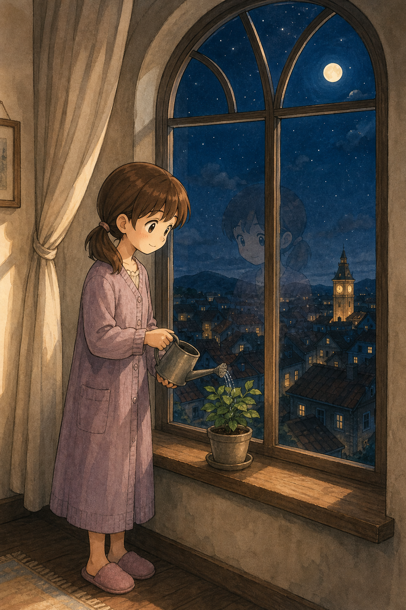
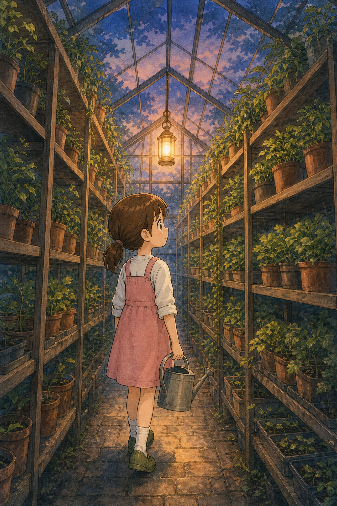

Filler-art register: vertical, poster-weight, closing license (mood leads, identity holds). Not bound to any edition. Click for full size.
Aged-up, night housecoat (licensed), faint reflection in the glass, clocktower town below.

Canon outfit, dusk glass roof, one lantern — the densest composition of the four.
